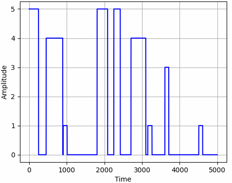

torchcs.signal package¶
Submodules¶
torchcs.signal.pulses module¶
- torchcs.signal.pulses.grpulse(Np=None, Tpr=[0.002, 0.09], Apr=[1, 5], Fs=5000.0, Ts=1.0, seed=None)¶
generates rectangular pulse
- Parameters
Np (int or None, optional) – the number of pulses, by default None, which means generates randomly
Tpr (list, optional) – the range of pulse width, by default [2e-3, 100e-3]
Apr (list, optional) – the range of amplitudes, by default [1, 4]
Fs (float, optional) – the sampling frequency, by default 10e3
Ts (float, optional) – the sampling duration, by default 1.
seed (int or None, optional) – the seed for random number generator, by default None
- Returns
generated signal tensor (\(N_s\times 1\))
- Return type
tensor
Examples
The results shown in the above figure can be obtained by the following codes.
import torchbox as tb import matplotlib.pyplot as plt x = tb.grpulse(seed=2023) plt.figure() plt.grid() plt.plot(x, '-b') plt.xlabel('Time') plt.ylabel('Amplitude') plt.show()
{kind=link}